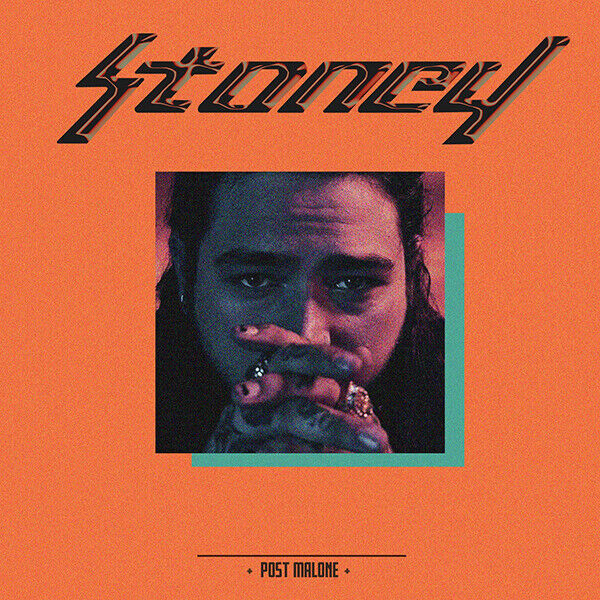

Post Malone
Genre-blending and melodic
Post Malone is an American singer, rapper and songwriter. His music is hard to put into one box because it mixes hip-hop, pop, rock and even a bit of country. What makes it stand out is his smooth, melodic voice and catchy choruses.
About Post Malone
Post Malone's real name is Austin Richard Post. He was born in Syracuse, New York, in 1995 and moved to Texas when he was young. He learned to play guitar as a teenager and listened to lots of different types of music, including hip-hop, rock and country.
He became popular in 2015 after he released the song "White Iverson" online. After that he signed with a record label and started working with other big artists. Since then he has had many popular songs and has become well known around the world.
His musical style
Post Malone's music mixes a few different genres together. He raps like a hip-hop artist, but he also sings melodies like a pop singer. A lot of his songs use guitars, which gives them a rock feel.
Because of this, his songs can sound quite different from each other. Some are slow and moody, and others are upbeat and easy to sing along to.
Popular songs
Circles
A calm, laid-back song about a relationship that keeps going round in circles. It has a smooth guitar sound and an easy melody.
Sunflower
A feel-good song with Swae Lee. It was made for the Spider-Man: Into the Spider-Verse soundtrack and has a light, catchy sound.
Congratulations
Featuring Quavo, this song is about success and celebrating. It has a confident feel with a very memorable chorus.
Rockstar
A darker hip-hop song with 21 Savage that talks about the rockstar lifestyle. It is one of his biggest songs.
Better Now
A more emotional song about a breakup. It mixes pop and hip-hop and shows his softer, melodic side.
Albums
His albums show how his sound has changed over the years, from hip-hop and trap influences to more pop, rock and melodic songs.

Stoney
2016
His first album. It mixes hip-hop with singing and includes "Congratulations".

Beerbongs & Bentleys
2018
A bigger sounding album that includes "Rockstar" and "Better Now".

Hollywood's Bleeding
2019
A more pop and rock style album. It includes "Circles" and "Sunflower".

Twelve Carat Toothache
2022
A calmer and more personal album with a slower, moodier feel.

Austin
2023
An album named after his first name, with a lot of guitar and a more personal sound.
What makes his sound unique?
The first thing people notice is his melodic voice. Even when he is rapping, he often turns the lines into a tune that is easy to remember.
His lyrics are often emotional and honest, talking about love, fame and struggles. Many of his songs have catchy choruses that stay in your head. He also mixes different genres without sounding like he is copying anyone, and that is a big part of why his music is so recognisable.
Every artist has a unique sound
Post Malone started online and grew into one of the biggest names in modern music. By mixing hip-hop, pop, rock and melodic singing, he built a sound that is clearly his own.
Back to the artists